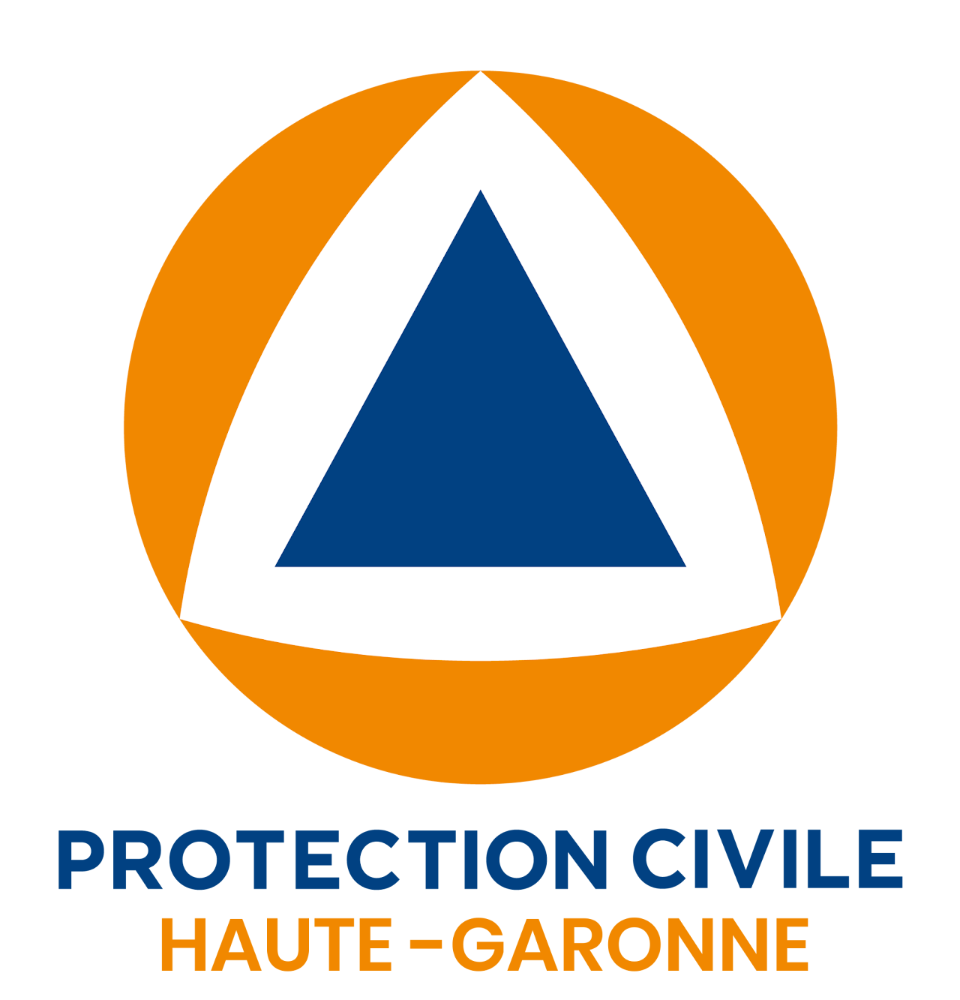

A Commitment to Civil Security
I am proud to be a volunteer with the Protection Civile, an organization dedicated to providing emergency response and sisaster relief services.
The Protection Civile is a vital part ofthe community, offering assistanceduring natural disasters, medical emergencies, and other crises.
As a volunteer, I have the opportunity to contribute to the safety and well-being of others, while also gaining valuable axperience in emergency management and first aid.
This role not only allows me to give back to my community but also reinforces my commitment to civic engagement and sustainability.
